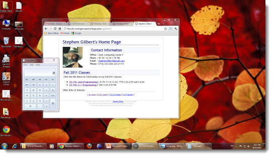
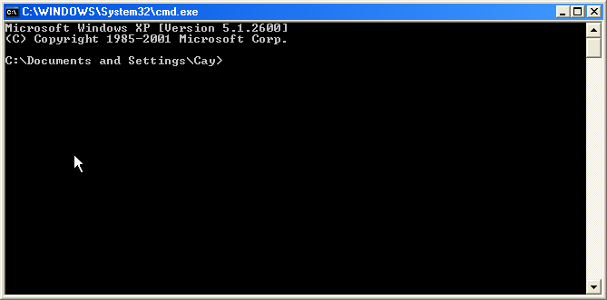
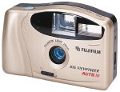
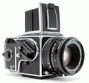
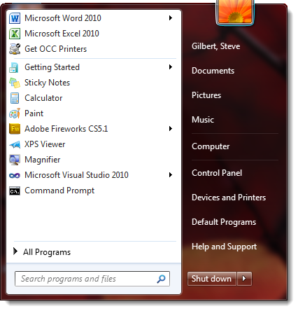
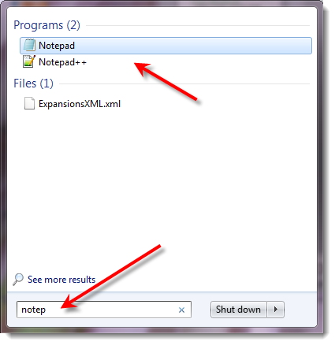

The
operating system manages the
resources of a computer, such as its internal memory, the disk drives,
keyboard, monitor screen, mouse, printers, and network connections. People who
use a computer to browse the web or play games have minimal contact with the
operating system. Most of their time is spent with application programs.
These users tend to use the operating system only to fix problems, for
example with a failed internet connection. The most recent versions of popular
operating systems (such as Windows 7) have become very much oriented towards
the consumer, hiding all but the most basic tasks from the casual user.
The User Interface
Computer programmers have more advanced needs than people who use the
computer as a tool. Programmers need to compile and launch programs and
automate recurring tasks. This tutorial is written for programmers who are
already familiar with the basics of using a computer.
If you have prior experience using a computer for playing games or writing
reports and are now learning to program, you will need to learn more about your
operating system. Some students are reluctant to embark on this effort, either
because they feel that they already know how to use their computer, or because
they already have their hands full learning about programming. However, that is
a short-sighted attitude. Without knowing the operating system, many common
programming tasks seem tedious or even impossible.
Operating systems come with two different kinds of user interface:
- a graphical user interface or GUI
- a command line interface, also called a shell
Most computer users are familiar with the graphical user interface or GUI. Most GUI environments display a desktop that is populated with windows, icons and menus. You use a pointer (directed by a mouse or trackball) to select items on the desktop. These interfaces are sometimes called WIMP interfaces, after the first letters of the words window, icon, menu, and pointer. Here is a screen capture of a typical WIMP interface:

The other user interface is a command shell. A command shell is simply a window without any graphical decorations. You type commands, using the keyboard, and you see the results of the commands displayed as text. There are no icons, and you can use the mouse only in limited circumstances. Here is a typical command shell:

A command shell is not a good user interface for casual users. However, experienced users find that the command shell is indispensible for many tasks.
Look at it this way. If you just want to snap vacation photos, you'll use a "point and shoot" camera. It requires no training and takes decent pictures.

But if you want your photos to be published in a magazine, you will need a professional camera. You will need to spend time learning rather technical concepts such as f-stops and shutter speeds.

We don't want to leave you with the impression that the command shell is the best tool for every job. Sometimes, you are better off using the GUI, particularly if you spend some effort learning how to use it efficiently. Just like a professional photographer chooses the best instrument for the job, you will need to learn when to use the GUI and when to use the command shell.
In this tutorial, you will learn some tricks that make the GUI faster and more efficient, and you will learn the basics of the command shell.
Keyboard Shortcuts
After you log on to your computer, you see a desktop, which may or may not contain some icons (small pictures representing programs, services, or resources). At the bottom left of the screen is the Start button. Across the bottom, is the task bar which contains buttons for all currently running programs. If you are reading this document in a web browser (and not from a printout), then there should be a button corresponding to the browser program. At the bottom right of the screen is a clock, possibly together with somesmaller icons.
You probably know how to launch programs by clicking on the start button or on desktop icons. We will now introduce another method.
Type the keyboard shortcut Ctrl+Esc. That is, hold down the Ctrl key, and, without lifting your finger off it, hold down the Esc key. Then let go of both keys (in either order). This keyboard shortcut simulates a click on the Start button. An even simpler method is to just tap the Windows key that appears between the Ctrl and Alt keys.
Why use a keyboard shortcut? It is much faster to hit the Windows key or even to press Ctrl+Esc than it is to
- grab the mouse
- move the mouse to the lower left corner of the screen
- click the mouse button
For a programmer, the first step ("grab the mouse") is the most painful. Programmers need to type a lot of code and therefore have their hands on the keyboard most of the time. In this regard, programmers are very different from casual computer users who have a hand on the mouse much of the time.
You will see a popup menu, containing icons and names. The exact layout of the menu depends on the version of Windows and on the customization of the start menu. Here is one example. Your dialog may well be quite different.

Let's try to open the Notepad program that is built into Windows. Just start typing the word notepad. As you start typing, the Windows 7 start menu attempts to find a program that matches your typing:

In most dialog boxes, hitting the Enter key is the same as clicking the Ok button. Typing Esc dismisses the dialog, just as if you had clicked the Cancel button.
Hit the Enter key now. The Notepad program launches.
Based on the...
Windows Shell Tutorial
by Cay S. Horstmann
Updated for Windows 7 by Stephen Gilbert

Windows Shell
Tutorial by Cay Horstmann is licensed under a
Creative Commons
Attribution-Noncommercial-Share Alike 3.0 United States License.